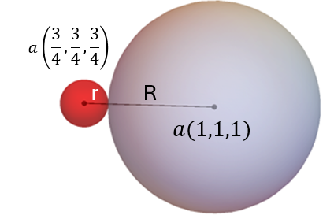

Find the size of the largest interstital atom that will just fit into
the tetrahedral site for the face-centered cubic structure.
Objectives:
Identify the tetrahedral interstitial site in the FCC crystal
structure.
Calculate the distance between the the center of the interstitial
site to that of the nearest neighbor site.
Use the calculated distance and the appropriate edge length for the
FCC structure, to determine the size of the interstitial site
relative to the host atom radius.
Interstitial Lattice Sites
The tetrahedral site in the FCC structure
Space filling model of the FCC structure with a small interstitial
atom shown in red at position
\((\frac{3}{4},\frac{3}{4},\frac{3}{4})\). The interstial atom sits in
the center of a tetrahedron formed by its 4 neighbors (shaded grey).
Location of tetrahedral sites in FCC structure:
Using fractional coordinates, the tetrahedral site is located \((\pm 0.25,
\pm0.25, \pm0.25)\) away from a corner atom. For example, if we are
considering the corner atom at \((0,0,0)\), the tetrahedral site is
located at \[(0,0,0)+(0.25,0.25,0.25)=(0.25,0.25,0.25)\] If we are
considering the corner atom at \((1,0,0)\), however, the tetrahedral site
is located at \[ (1,0,0)+(-0.25,0.25,0.25) = (0.75,0.25,0.25)\]
Consider the interstitial atom and its corner neighbor:
If we take the origin to be located at the bottom-back-left corner, then
the corner atom shown shaded grey would have a position of (1,1,1) or in
absolute coordinates \(a (1,1,1)\) and the tetrahedral site (small red
atom) would be located at (0.75, 0.75, 0.75) or again in absolute units as
\(a(0.75,0.75,0.75)\). These two atoms touch when the tetrahedral site is
completely filled.
The line connecting the corner and the tetrahedral center is equal to
\(r+R\) as shown in the figure.

The corner atom \(a (1,1,1)\) with radius, \(R\), and the interstitial
atom \(a(0.75,0.75,0.75)\) with radius, \(r\), are separated by the
distance \(r+R\).
The length of this line can also be calculated by using the distance
formula, \(d=\sqrt{(p_x-q_x)^2+(p_y-q_y)^2+(p_z-q_z)^2}\) where \(p\) and
\(q\) are any two points or in our case where we know so far that
\(d=r+R\): \[r+R=\sqrt{(1a-0.75a)^2+(1a-0.75a)^2+(1a-0.75a)^2}\] which
simplifies to \(a\ \sqrt{\frac{3}{16}}\) or \(0.25\ a \ \sqrt{3}\).
Therefore, we have \[r+R=0.25\ a \ \sqrt{3}\] Recall that for the
FCC
structure, \(a=\frac{4R}{\sqrt{2}}\). Substituting we have,
\[r+R=0.25\ \frac{4R}{\sqrt{2}} \ \sqrt{3}\] Solving for
\(r\), \[r=(0.25\ \frac{4R}{\sqrt{2}} \ \sqrt{3})-R \approx
0.225 R\]
How would you find the size of the tetrahedral site in the
BCC
structure given the coordinates of the interstial atom, \(a
(1,1/2,1/4)\), and its neighbor, \(a (1/2,1/2,1/2)\)?